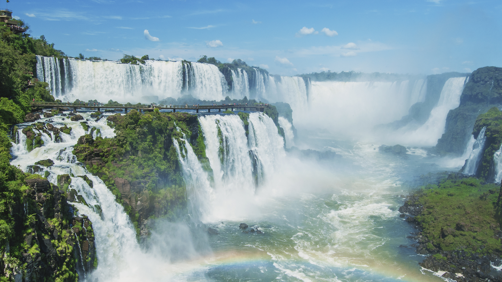

Cristo Redentor
O Cristo Redentor é uma estátua icônica localizada no Rio de Janeiro, representando a fé cristã e oferecendo vistas deslumbrantes da cidade.

Pão de açúcar
O Pão de Açúcar é um dos cartões-postais mais famosos da cidade do Rio de Janeiro e é um destino turístico popular para pessoas de todo o mundo. Com uma altura de 396 metros, essa montanha rochosa oferece vistas panorâmicas deslumbrantes da cidade. É um destino obrigatório para qualquer pessoa que visite o Rio!

Cataratas do Iguaçu
As Cataratas do Iguaçu são uma das maiores e mais impressionantes quedas d'água do mundo, localizadas na fronteira entre Brasil e Argentina.
Cristo Redentor
Amazônia
Cataratas do Iguaçu